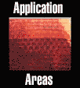

- education -
|
For standards-based reviews of commercially-produced software, video, and Web resources, visit the new California Learning Resources Network - CLRN Web site. . SCORE Science Resources"Website Search" Lessons"Lessons Search" Standards and Framework Contact SCORE Science Resource Rating Guide Lesson Design Criteria DiscussionArea SCOREFeedback Humboldt County Office of Education Schools of California On-line Resources for Education Connecting On-line Resources to California's Standards SCORE Science is maintained by the Humboldt County Office of Education. Funding for SCORE was provided, in part, by the California Department of Education from 1996 - 2000. For standards-based reviews of commercially-produced software, video, and Web resources, visit the new California Learning Resources Network - CLRN Web site. |
|  |
I became more knowledgeable about state and national standards. Visit our archive to see results from previous polls. The Eisenhower National Clearinghouse for Mathematics and Science Education (ENC) is located at The Ohio State University, and is funded through a contract with the U. Department of Education's Office of Educational Research and Improvement. . |
|
Brian Blanchflower exhibition is running until 26 May An exhibition of large-scale works investigating existence and perception more. . Curtin recognises extraordinary scientist Earlier this month Curtin recognised the extraordinary contribution Emeritus Professor John de Laeter, AO has made, not only to science research and education, but also to the University. Brian Blanchflower exhibition is running until 26 May An exhibition of large-scale works investigating existence and perception more. . |
|
B's Wide World of Web Data - Links to hundreds of on-line datasets all over the world that students and professors can use for in class work. Can be used to see what real data look like and for examples in lectures. Journal of Statistics Education Data Archive - Datasets contributed to an archive maintained by the Journal editors. CHANCE Project Datasets rescources - Data from current events for teaching statistics. Statlib is the primary general archive of the statistical community. |
A site I really like: http://www.educationindex.com/award.html